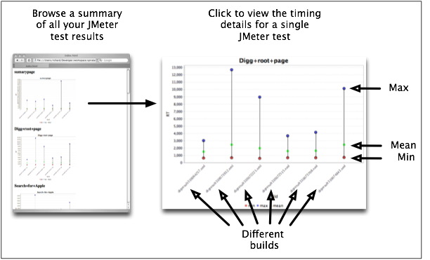

About JChav
JChav is a way to see the change in performance of your web application
over time, by running a benchmark test for each build you produce.

How does it work?
- You build and deploy your application.
- You write a JMeter test plan to exercise your application.
- From Ant, you run the JMeter test plan and log the results, using the Ant JMeter task.
- JChav reads all the JMeter logs from each of your runs (one per build), and produces a set
of charts for each test in each run.
- Each time you deploy, re-run the JMeter tests and the JChav tool to update
the charts to show the change in performance.
Getting started
JChav is made available under the Apache 2.0 license.
Copyright notice here?